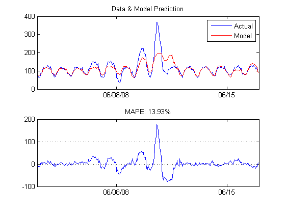

Electricity Price Forecasting
This example demonstrates building and validating a short term electricity price forecasting model with MATLAB using Neural Networks. The models take into account multiple sources of information including fuel prices, temperatures and holidays in constructing a day-ahead price forecaster.
Contents
Import Weather, Load and Price Data
The data set used is a table of historical hourly loads, prices and temperature observations from the New England ISO for the years 2004 to 2008. The weather information includes the dry bulb temperature and the dew point. This data set is imported from an Access database using the auto-generated function fetchDBPriceData.
addpath ..\Util data = fetchDBPriceData('2004-01-01', '2008-12-31');
Import list of holidays
A list of New England holidays that span the historical date range is imported from an Excel spreadsheet
[num, text] = xlsread('..\Data\Holidays.xls');
holidays = text(2:end,1);
Generate Predictor Matrix
The function genPredictors generates the predictor variables used as inputs for the model. For short-term forecasting these include
- Dry bulb temperature
- Dew point
- Hour of day
- Day of the week
- A flag indicating if it is a holiday/weekend
- System load
- Previous day's average load
- Load from the same hour the previous day
- Load from the same hour and same day from the previous week
- Previous day's average price
- Price from the same hour the previous day
- Price from the same hour and same day from the previous week
- Previous day's natural gas price
- Previous week's average natural gas price
If the goal is medium-term or long-term price forecasting, only the inputs hour of day, day of week, time of year and holidays can be used deterministically. The weather/price information would need to be specified as an average or a distribution
% Select forecast horizon term = 'short'; [X, dates, labels] = genPredictors(data, term, holidays);
Split the dataset to create a Training and Test set
The dataset is divided into two sets, a training set which includes data from 2004 to 2007 and a test set with data from 2008. The training set is used for building the model (estimating its parameters). The test set is used only for forecasting to test the performance of the model on out-of-sample data.
% Interpolate missing values ind = data.ElecPrice==0; data.ElecPrice(ind) = interp1(find(~ind), data.ElecPrice(~ind), find(ind)); % Create training set trainInd = data.NumDate < datenum('2008-01-01'); trainX = X(trainInd,:); trainY = data.ElecPrice(trainInd); % Create test set and save for later testInd = data.NumDate >= datenum('2008-01-01'); testX = X(testInd,:); testY = data.ElecPrice(testInd); testDates = dates(testInd); save Data\testSet testDates testX testY clear X data trainInd testInd term holidays dates ans num text
Build the Price Forecasting Model
The next few cells builds a Neural Network regression model for day-ahead price forecasting given the training data. This model is then used on the test data to validate its accuracy.
Initialize and Train Network
Initialize a default network of two layers with 20 neurons. Use the "mean absolute error" (MAE) performance metric. Then, train the network with the default Levenburg-Marquardt algorithm. For efficiency a pre-trained network is loaded unless a retrain is specifically enforced.
reTrain = false; if reTrain || ~exist('Models\NNModel.mat', 'file') net = newfit(trainX', trainY', 20); net.performFcn = 'mae'; net = train(net, trainX', trainY'); save Models\NNModel.mat net else load Models\NNModel.mat end
Forecast using Neural Network Model
Once the model is built, perform a forecast on the independent test set.
load Data\testSet
forecastPrice = sim(net, testX')';
Compare Forecast Price and Actual Price
Create a plot to compare the actual price and the predicted price as well as compute the forecast error. In addition to the visualization, quantify the performance of the forecaster using metrics such as mean average error (MAE), mean average percent error (MAPE) and daily peak forecast error.
err = testY-forecastPrice; fitPlot(testDates, [testY forecastPrice], err); errpct = abs(err)./testY*100; fL = reshape(forecastPrice, 24, length(forecastPrice)/24)'; tY = reshape(testY, 24, length(testY)/24)'; peakerrpct = abs(max(tY,[],2) - max(fL,[],2))./max(tY,[],2) * 100; % fL = reshape(forecastPrice(1:end-1), 48, (length(forecastPrice)-1)/48)'; % tY = reshape(testY(1:end-1), 48, (length(testY)-1)/48)'; % peakerrpct = abs(max(tY,[],2) - max(fL,[],2))./max(tY,[],2) * 100; fprintf('Mean Average Percent Error (MAPE): %0.2f%% \nMean Average Error (MAE): $%0.2f\nDaily Peak MAPE: %0.2f%%\n',... mean(errpct(~isinf(errpct))), mean(abs(err)), mean(peakerrpct))
Mean Average Percent Error (MAPE): 7.41% Mean Average Error (MAE): $6.03 Daily Peak MAPE: 6.54%
Generate Weekly Charts
Create a comparison of forecast and actual price for every week in the test set.
generateCharts = true; if generateCharts step = 168*2; for i = 0:step:length(testDates)-step clf; fitPlot(testDates(i+1:i+step), [testY(i+1:i+step) forecastPrice(i+1:i+step)], err(i+1:i+step)); title(sprintf('MAPE: %0.2f%%', mean(errpct(i+1:i+step)))); snapnow end end